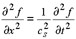
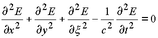
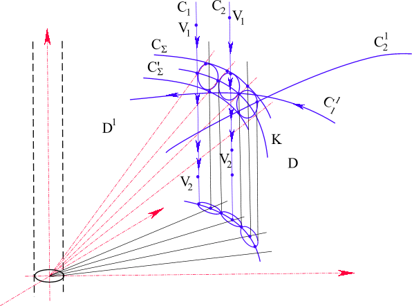
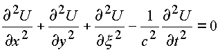
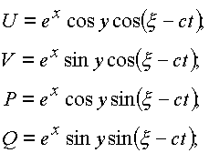

|
В. И. ЕЛИСЕЕВ ВВЕДЕНИЕ В МЕТОДЫ ТЕОРИИ
ФУНКЦИЙ ПРОСТРАНСТВЕННОГО КОМПЛЕКСНОГО ПЕРЕМЕННОГО |
|
4 .1. Физический смысл решения волнового уравнения аналитическими функциями комплексного пространственного переменного. Вихрь как причина образования заряда в пространстве.
Рассмотрим волновые уравнения, описывающие различные физические среды. Например, распространение звука в среде описывается уравнением
|  | (4.1.) |
где функция ¦ - описывающая поведение среды (воздуха)
Далее, если плоская световая волна распространяется
вдоль оси x и поляризована так, что электрическое поле E направлено по оси y, то имеем(4.2.) |
где c - скорость света.
Уравнение (4.2) является следствием уравнения Максвелла. Уравнения (4.1.), (4.2.) согласно современному представлению теоретической физики, являются уравнением одномерных волн. Для их вывода используется векторная интерпретация точечного вихря. Уравнения содержат временную
координату. Эти два условия говорят о том, что в пространстве можно получить решение непосредственно из его физической сущности.Так, решением одномерного волнового уравнения
в действительных координатах является функция
,
где
представляют жесткое перемещение вдоль оси x (рис. 42, рис. 43).Рис. 42. Жесткое перемещение плоской волны по направлению действительной оси
Рис. 43. Образование крутящего момента в пространстве при отображении пространства конуса-фильтра делителей нуля
В пространстве векторная операция точечного вихря определяет функцию
от комплекса, где ,
как функцию двух действительных функций от двух действительных переменных
В соответствии с определением производной
от этой функции по формуле (1.26.) будем иметь| . | (4.3.) |
Откуда, приравняв комплексные части получим пространственный ротор. В пространстве
имеем два вектора, имеющих начало в окрестности e -туннеля. Вектора лежатв двух взаимно перпендикулярных плоскостях так, что образуется крутящий момент (рис. 4
3).Из формулы (4.3) имеем систему уравнений, дающих волновое уравнение.
.
Такой подход вскрывает механизм распространения электромагнитной волны (рис. 44), образованной из двух волн электрической E и магнитной H) и существующей благодаря наличию светового e -туннеля как одна волна.

Рис.44. Пространственная электромагнитная волна в комплексной интерпретации
Таким образом, решением волнового уравнения является функция
и решение принадлежит четырехмерному пространству, а не плоскости, как считалось до настоящего времени.Комплексные части аналитических функций, определенных в пространстве
, являются решением волнового уравнения.В теоретической физике рассматривается волновое уравнение, определенное в четырехмерном пространстве. Например, вектор Е электрической напряженности описывается пространственным уравнениям.
| . | (4.4.) |
Решение этого уравнения представляется в виде суперпозиции решений одномерного уравнения. В решение входят волны, бегущие в направлении оси
x, если поле не зависит от у, x , а также от у, если поле не зависит от х и x и так далее. В общем случае решение содержит суперпозицию волн, идущих в любых направлениях пространства.Математического аппарата для получения общего уравнения в теоретической физике не существует, поэтому его сводят к решению уравнения (4.4), вводя вместо переменных
x, у, x переменную r.
После замены переменных в уравнении (4.4) и преобразований получим уравнение сферических волн, исходящих из
центра точечного источника.Решением в общем случае является Функция
| , | (4.5.) |
описывающая первым своим членом сходящуюся волну
(рис. 45).В решении (4.5) функция y в начале координат бесконечна. Решение физически означает, что в начале координат
располагается источник и поэтому решение не отвечает
Рис. 45. Сходящаяся волна
свободному волновому уравнению, следовательно, и начало координат не отвечает свободному волновому уравнению, Начало координат исключается из рассмотрения. Теоретическая физика в настоящее время не может объяснить этот момент.
В комплексном пространстве ситуация меняется. По аналогии с решением одномерного волнового уравнения составим решение в пространстве, которым будет функция от комплекса
,
деленная на
r.В этом решении параметр
r уже ограничен градусом e -туннеля, ибо прифункция определяется от делителей нуля.
Это первая особенность решения, которая снимает вопрос об образовании волн в пространстве без наличия точечного источника - заряда.Точечным зарядом в пространстве служит наличие в пространстве e -туннеля, Если e -туннель не закрыт структурой пространства более высокой размерности, то это пространство следует считать заряженным, в противном случае - нейтральным.
Отображение, осуществляемое функцией
, позволяет определить в новых координатах, которыми будут комплексные части функции, туннель определенной уже физической природы. В окрестности этого нового туннеля комплексные части, выступающие как векторы, образуют крутящий момент (рис. 46)Рис. 46. Образование пространственной волны
Аналитические функции, определенные в комплексном пространстве, дают решение волнового уравнения в более общем виде. Условия дифференцирования функции дают жесткие ограничения, которые представляют в принципе физический принцип суперпозиции волн.
Если дана функция
,
то действительные функции U, V, P, Q от действительных переменных
удовлетворяют системе из четырёх эллиптических:; ; ;
;
и системе из двух гиперболических уравнений:
; .
Совместно система дает волновое уравнение
.
Замена переменной
на временную переменную ct дает свободное волновое уравнение.
Решением этого уравнения будет функция
, определенная в пространстве комплексных координат.
В этом комплексе
произведена замена переменной с базисным вектором на переменную с вектором , то есть вектор переменной повернут на угол p /2 относительно вектора j (см. рис. 46). Вследствие этого в пространстве образуется крутящий момент между плоскостьюи вектором i
y, что и приводит к образованию сферических волн.Пример 1.
;

Функции
U, V, P, Q являются решением волнового уравнения.Пример: 2.
.
Комплексные функции
W, R являются решением волнового уравнения.Таким образом, пространство с e -туннелем рассматриваем как заряженное пространство, В этом смысле вихрь, идущий по вихревой траектории типа C
3, создает заряженное пространство. Заряд в виде вихревого образование включает в себя сходящуюся и расходящуюся волны.Мини оглавление:
[0], [1.1.1, 1.1.2, 1.1.3, 1.1.4, 1.1.5, 1.1.6, 1.1.7, 1.1.8, 1.2, 1.2.1, 1.2.2, 1.2.2.a, 1.2.2.b, 1.2.2.c, 1.2.2.d, 1.2.2.e, 1.2.2.f, 1.2.2.g, 1.2.2.h, 1.2.3, 1.3.1, 1.3.2, 1.3.3, 1.3.4, 1.3.5, 1.3.6, 1.4.1, 1.4.2, 1.5, 1.6, 1.7.1, 1.7.2, 1.7.3.1, 1.7.3.2, 1.7.3.3, 1.7.4.1, 1.7.4.2, 1.8.1], [2.1, 2.2],[3.1, 3.2, 3.3, 3.4.1, 3.4.2, 3.4.3, 3.4.4, 3.4.5],[4.1, 4.2, 4.3, 4.4],[5.1, 5.1.Рис.52, 5.2, 5.3, 5.4, 5.4.Т1, 5.4.Т2, 5.4.Т3, 5.5.1, 5.5.2, 5.5.3, 5.5.4],[6.1.1, 6.1.2, 6.2.1, 6.2.2, 6.2.3, 6.2.4, 6.2.5, 6.3, 6.4.1, 6.4.2, 6.5.1, 6.5.2],[7.1, 7.2, 7.3, 7.4, 7.5, 7.6, 7.7.1, 7.7.2, 7.8.1, 7.8.2, 7.8.3, 7.9],[8.1, 8.2.1, 8.2.2, 8.3, 8.4, 8.5, 8.6, 8.6.T1, 8.7, 8.8.1, 8.8.2, 8.8.3, 8.9.1, 8.9.2, 8.9.3, 8.10, 8.10.T2, 8.10.T3],[9.1, 9.2, 9.3, Рис.88, 89, 90, 91, 92, 93, 94, 95, 96, 97, 98, 99, 100],[10.1, 10.2, 10.3, 10.4, 10.5, 10.6, 10.7, 10.8, 10.9, 10.10, 10.11, 10.12, 10.13, 10.14, 10.15.1, 10.15.2, 10.16.1, 10.16.2, 10.17, 10.18],[11]
Размещенный материал является электронной версией книги: © В.И.Елисеев, "Введение в методы теории функций пространственного комплексного переменного", изданной Центром научно-технического творчества молодежи Алгоритм. - М.:, НИАТ. - 1990. Шифр Д7-90/83308. в каталоге Государственной публичной научно-технической библиотеки. Сайт действует с 10 августа 1998.
E-mail: mathsru@gmail.com